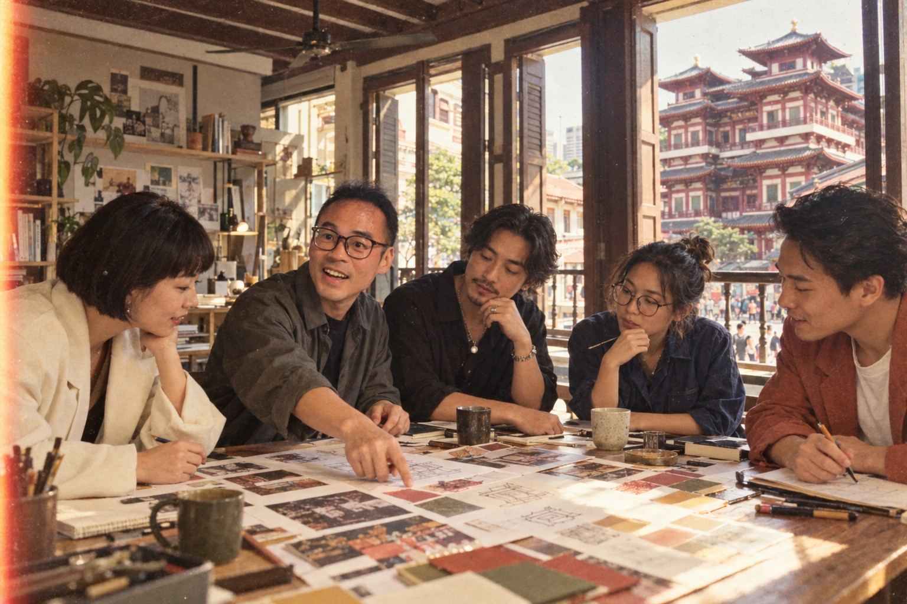

05 / 牛車水 · 我的二樓設計工作室
MAO，曾經在樓下旅行，如今在樓上創作。
曾經我是街上的遊客，如今窗裡亮著的，是我的工作室。
那天下午，我在佛牙寺對面、自己的二樓設計工作室開會。長桌上攤著提案、色票和幾杯還沒喝完的咖啡。穿寬版西裝的同事把版面貼上牆，另一位捲起襯衫袖子，在草圖上補了一筆。我們為一個標題討論了好一會兒，直到有人念出那句對的文案，整張桌子忽然安靜，接著一起笑了。
我轉頭望向窗外。佛牙寺的屋簷就在對街，遊客沿著一樓街道走過，有人停下來拍照，有人抬頭找路。我認得那種眼神，曾經的我也在樓下，拿著相機，想像如果能在這裡生活會是什麼樣子。那天，我把目光收回桌上，對夥伴說：好，就從這個方向做下去。感謝那個曾經仰望的自己，真的帶我走到了這扇窗的另一邊。